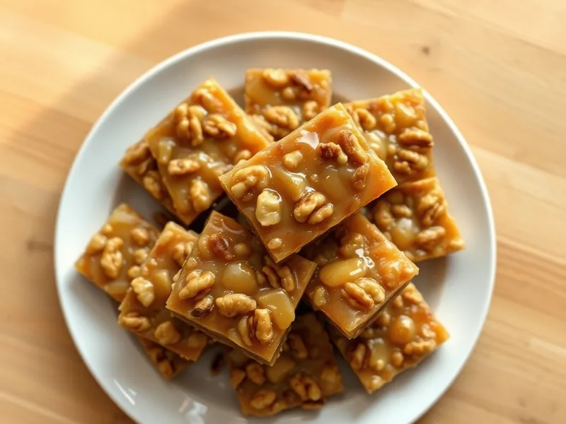

Гозинаки с грецкими орехами и мёдом
Грузинская сладость из обжаренных грецких орехов в густом мёде
70 мин8 порц.346 ккал на порциюБ 6 · Ж 25 · У 27Кавказская кухня
Открыть в приложении: порции, таймеры, список покупок
Продукты на 8 порц.
- Грецкие орехи300 г
- Мёд200 г
- Сахар1,5 ст. л.
- Вода20 мл
- Растительное масло3 мл
Как готовить
- Обжарьте грецкие орехи на сухой сковороде на среднем огне 5-7 минут, помешивая, и порубите ножом на крупные кусочки.
- Доведите мёд до кипения на слабом огне, добавьте сахар и варите 8-10 минут, помешивая, пока мёд не потемнеет и капля в холодной воде не застынет шариком.
- Всыпьте орехи в мёд и прогрейте вместе 2-3 минуты, перемешивая.
- Выложите массу на доску, смоченную водой, или на бумагу, смазанную маслом, и раскатайте мокрой скалкой в пласт толщиной 1 см.
- Через 10 минут, пока масса тёплая, нарежьте ромбами и оставьте остывать полностью на 30 минут.
Совет. Если мёд недоварить, гозинаки останутся мягкими и липкими, поэтому обязательно проверяйте каплю в холодной воде.